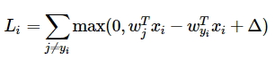
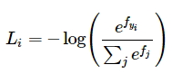
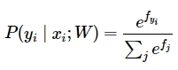
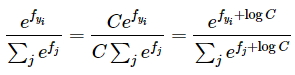
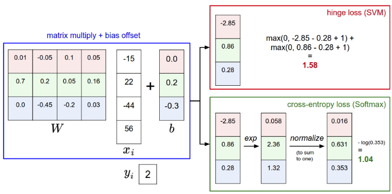

Третья задача в Assignment #1: Image Classification, kNN, SVM, Softmax, Neural Network — это построение Softmax-классификатора.
В задаче используется тот же учебный проект, что и в задании на построение knn-классификатора. Будем работать с softmax.ipynb и softmax.py
Я проходил cs231n на задачах 2018-го года. Иллюстрации к данной статье из бекграунда курса.
Что можно узнать, решив задачу
-
научиться строить softmax-классификатор
-
понять разницу между svm и softmax
Совсем немного теории про softmax-функцию
В прошлом задании мы разбирали svm-классификатор в котором используется функция потерь следующего вида:

Функция в SVM подсчитывает корректные классы, которые больше некорректных более чем на заданное значение. В softmax-классификаторе применяется другая функция потерь:

То что мы видим внутри логарифма называется softmax-функцией. Она определяет вектор вероятностей корректных оценок в диапазоне от 0 до 1. При этом сумма вероятностей для всего исследуемого пула объектов сходится к 1.
Softmax-классификатор сводит к минимуму кросс-энтропию между распределением вероятностей верного предсказания классов по всем исследуемым объектам и истинным распределением, в котором вероятность, равная 1, очевидно соответствует только одному объекту из всех возможных, а вероятности остальных равны 0. Иными словами, в идеале, задача минимизации функции потерь сводится к тому, чтобы в массиве вероятностей верных предсказаний все вероятности, кроме одной, стремились 0, а в математическом смысле задача сводится к минимизации расстояния между двумя распределениями.
Авторы курса предлагают такую интерпретацию softmax-функции:

Это нормализованная вероятность, соответствующая верной метке с учетом изображения и веса . Классификатор Softmax интерпретирует оценки внутри выходного вектора как ненормализованные логарифмические вероятности. Возведение в степень этих величин дает ненормализованные вероятности, а деление выполняет нормализацию так, чтобы сумма всех вероятностей сходилась к 1. В данной интерпретации мы сводим к минимуму отрицательную логарифмическую вероятность правильного класса. Это можно считать выполнением оценки максимального правдоподобия (Maximum Likelihood Estimation MLE).
Далее, в курсе указывают на то, что на практике приходится сталкиваться с тем, что экспоненциальные компоненты функции могут быть очень большими числами, что затрудняет их точно вычисление. Для устранения проблемы применяют стандартный трюк с нормализацией константой:

На практике подбирают таким, чтобы равнялся максимальному значению . В этом случае это значение станет равным 0, а все остальные будут сдвинуты на величину максимума. Пример из курса
# плохой вариант, проблемы с экспонентой
f = np.array([123, 456, 789])
p = np.exp(f) / np.sum(np.exp(f))
# вычитаем максимальное значение и решаем проблему больших чисел
f -= np.max(f) # [-666, -333, 0]
p = np.exp(f) / np.sum(np.exp(f))
Ну и, наконец, пример softmax в сравнении с SVM:

В обоих случаях вычисляем один и тот же вектор . Разница в функции потерь. SVM подсчитывает значения для корректных меток, которые больше некорректных более чем на заданную постоянную. Softmax же интерпретирует значения как вероятности, переводит их в логарифмический масштаб и нормализует. При этом суммарные значения функции потерь SVM и Softmax классификаторов сравнивать нельзя, так как эти значения имеют смысл только в контексте применяемой функции потерь. Softmax позволяет подсчитать вероятность верной классификации для всех меток, а SVM поставляет некие значения для всех классов, которые трудно интерпретировать. За интерпретацию в softmax приходится платить — распределение вероятностей будет сильно зависеть от силы регуляризации .
На практике SVM и Softmax дают примерно одинаковый результат и не сильно отличаются по производительности. Хотите больше подробностей? Linear classification: Support Vector Machine, Softmax
Задачи
Задачи абсолютно аналогичны задачам svm-classificator. Необходимо:
- реализовать векторизованную функцию потерь
- посчитать аналитический градиент
- сравнить результат с числовым градиентом
- оптимизировать скорость обучения и силу регуляризации
В softmax.ipynb уже стандартно (мы это делали в двух предыдущих задачах) получаем объекты из дата-сета CIFAR-10, формируем обучающую, валидационную и тестовые выборки, нормализуем данные, вычитая из всех изображений среднее изображение и проворачиваем трюк с баесовским вектором, вынося его в массив весов и соответственно добавляя единицы в .
Затем в softmax.py необходимо реализовать «наивный» softmax-классификатор. Как мы уже знаем, классификатор получает на вход абсолютно все то же самое, что и svm и от svm отличается только функцией потерь. Поэтому смело берем SVM из предыдущей задачи и меняем функцию в теле цикла на softmax-функцию.
def softmax_loss_naive(W, X, y, reg):
loss = 0.0
dW = np.zeros_like(W)
num_classes = W.shape[1]
num_train = X.shape[0]
for i in range(num_train):
scores = X[i].dot(W)
correct_class_score = scores[y[i]]
for j in range(num_classes): #1
#2
loss /= num_train #4
loss += reg * np.sum(W * W) #4
return loss, dW
Во внутреннем цикле (1) считаем знаменатель softmax-функции. Далее, надо посчитать нормализованную softmax-функцию и саму функцию потерь (3), не забыв про регуляризацию.
Следующий шаг - «наивный» градиент.
def softmax_loss_naive(W, X, y, reg):
loss = 0.0
dW = np.zeros_like(W)
num_classes = W.shape[1]
num_train = X.shape[0]
for i in range(num_train):
scores = X[i].dot(W)
correct_class_score = scores[y[i]]
sum_j = 0.0
for j in range(num_classes):
sum_j += np.exp(scores[j]) #1
for j in range(num_classes):
dW[:, j] += (np.exp(scores[j]) * X[i]) / sum_j
if (j == y[i]):
dW[:, y[i]] -= X[i]
dW /= num_train #3
dW += W * reg
return loss, dW
В той же функции считаем градиент для всего массива (2), а затем сам градиент у же известным нам по svm методом (3). Дальше смотрим на результат в блокноте и сравниваем с численным градиентом. Авторы курса предлагают сравнить результат для разных значений регуляризации. Сравниваем.
Дальше, как и в задаче с svm, необходимо задать softmax_loss_vectorized. По традиции мы эту функцию пишем с нуля.
def softmax_loss_vectorized(W, X, y, reg):
loss = 0.0
dW = np.zeros(W.shape)
num_classes = W.shape[1]
num_train = X.shape[0]
scores = X.dot(W) #1
correct_class_scores = scores[range(num_train), y].reshape((num_train, 1))
sum_j = np.sum(np.exp(scores), axis=1).reshape((num_train, 1))
loss = np.sum(-1 * correct_class_scores + np.log(sum_j)) / num_train + reg * np.sum(W * W)
correct_matrix = np.zeros(scores.shape)
correct_matrix[range(num_train), y] = 1
dW = X.T.dot(np.exp(scores) / sum_j) - X.T.dot(correct_matrix)
dW = dW / num_train + W * reg
return loss, dW
Итак, нужно как-то избавиться от циклов. Для начала пересчитаем scores и correct_class_scores средствами numpy, не прибегая к циклам. Отсюда логика всех дальнейших действий становится предельно ясной - так же считаем softmax-функцию, функцию потерь и градиент, используя встроенные методы numpy, такие как np.sum. Решение довольно простое, а его результат по производительности покажет выигрыш по сравнению с циклами примерно в 50 раз.
Осталось только поэкспериментировать с гиперпараметрами - силой регуляризации и скоростью обучения. Задача абсолютно идентично той, что решалась в последней части задания на svm-classificator. Берем кусок кода, который мы делали для svm, вместо LinearSVM() получаем объект Softmax() и подкручиваем гиперпараметры так, чтобы точность перешагнула через 0.4. Можно посмотреть результат для тех же значений гиперпараметров, что использовались для svm. На этом примере как раз и можно увидеть, как softmax-классификатор зависит от силы регуляризации.
На этом практическая часть курса, связанная с линейными классификаторами, завершается. Следующая задача - построение простейшей двухслойной нейронной сети.